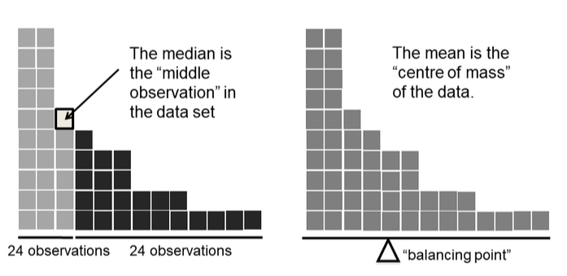
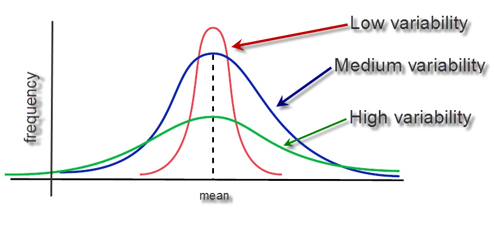
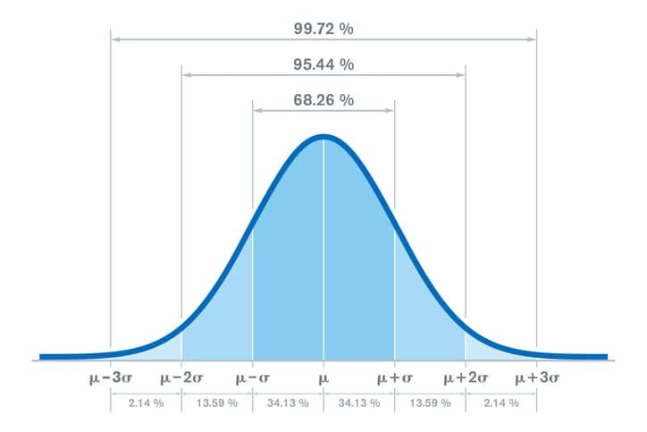
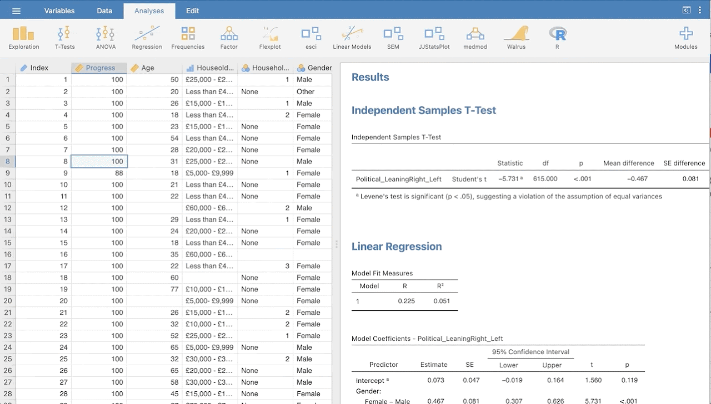
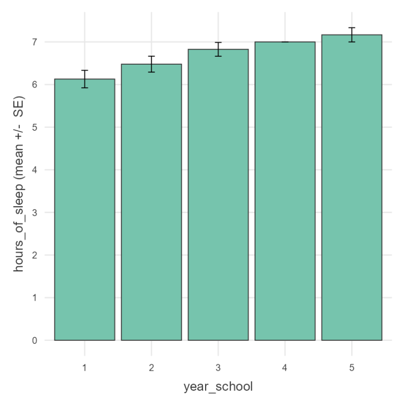
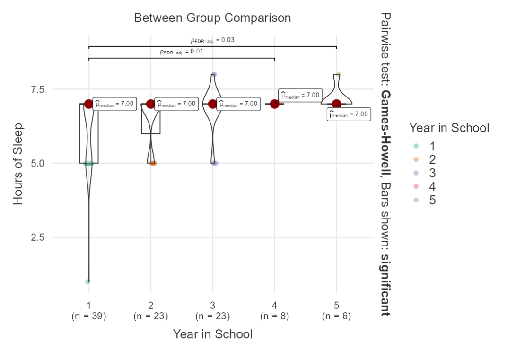

Week 03: Describe & Vizualize with JAMOVI
Date: September 10, 2026
Today


Starting Up
JAMOVI is basically a GUI for R that is more point-click
Open JAMOVI and import the TIPI Data
Menu > Open > tipi.csv
- We will use the TIPI data from the last lecture that has already been scored
Information on JAMOVI will be taken from Stats Made Easy
Descriptive Statistics
Some Terminology
| Population | Sample |
|---|---|
| \(\mu\) (mu) = Population Mean | \(\bar{X}\) (x bar) = Sample Mean |
| \(\sigma\) (sigma) = Population Standard Deviation | \(s\) = \(\hat{\sigma}\) = Sample Standard Deviation |
| \(\sigma^2\) (sigma squared) = Population Variance | \(s^2\) = \(\hat{\sigma^2}\) = Sample Variance |
Measures of Central Tendency
For a given set of observations, measures of central tendency allow us to get the “gist” of the data.
They tell us about where the “average” or the “mid-point” of the data lies or how much deviation there is from a central point.
Let’s take a look at the data that we have already loaded in, and complete some of these tasks.
Mean/Average
\[\bar{X} = \frac{X_1+X_2+...+X\_{N-1}X_N}{N} \]\[\bar{X} = \frac{X_1+X_2+...+X\_{N-1}X_N}{N}\]
OR
\[\bar{X} = \frac{1}{N}\sum_{i=1}^{N} X_i\]
Median
The median is the middle value of a set of observations: 50% of the data points fall below the median, and 50% fall above.

Measures of Variability
The overall spread of the data; How far from the middle?

Range
The range gives us the distance between the smallest and largest value in a dataset.
Variance and Standard Deviation
68-95-99.7 Rule
For nearly normally distributed data:
about 68% falls within 1 SD of the mean,
about 95% falls within 2 SD of the mean,
about 99.7% falls within 3 SD of the mean.
It is possible for observations to fall 4, 5, or more standard deviations away from the mean, but these occurrences are very rare if the data are nearly normal.

Variance
The sum of squared deviations
\[\sigma^2 = \frac{1}{N}\sum_{i=1}^N(X-\bar{X})^2\]
\[\hat{\sigma}^2 = s^2 = \frac{1}{N-1}\sum_{i=1}^N(X-\bar{X})^2\]
| \(i\) (observation) | \(X_i\) (value) | \(\bar{X}\) (sample mean) | \(X_i - \bar{X}\) (deviation from mean) | \((X_i - \bar{X})^2\) (squared deviation) |
|---|---|---|---|---|
| 1 | 56 | 36.6 | 19.4 | 376.36 |
| 2 | 31 | 36.6 | -5.6 | 31.36 |
| 3 | 56 | 36.6 | 19.4 | 376.36 |
| 4 | 8 | 36.6 | -28.6 | 817.96 |
| 5 | 32 | 36.6 | -4.6 | 21.16 |
Why do we use the squared deviation in the calculation of variance?
To get rid of negative values so that observations equally distant from the mean are weighted equally
To weigh larger deviations from the mean
Summarizing Data - JAMOVI
So far we have been examining various descriptive statistics. If you had followed along using R before, we were doing things individually. JAMOVI puts all descriptives in one location. We can then select which variable we want to get the summary stats for!
Let’s use it with our dataset!
Navigate to Analyses > Explore > Descriptives
Now, select your variable(s) and drag them in the empty Variables box.
If you want results broken down by another categorical variable, select it and drag this into the Split by box.

Select Descriptive Stats
Select how to display your data tables. You have got the following two options:
Variables across columns
Variables across rows
If your data is categorical select the Frequency Table.
A frequency table will be generated. Note, if you split your ordinal/nominal variable by another it will no longer display percentages (you can get this by using a contingency table).
Select Descriptive Stats
You can now select the relevant descriptive statistics in the Statistics section
Select the variable you want to get descriptive statistics for and then select the test you want. Note, you can also split your variable by another ordinal or nominal variable, e.g. you might want to see the data split by Gender.
Important: What descriptive statistics you select will depend on the type of data you have. If your data is categorical you should only select the option in Sample Size and the Mode under Central Tendency.
Select Descriptive Plots
To generate a basic descriptive plot navigate to the Plot section.
The type of plot you generate will depend on the type of data you have. If your data is continuous you can select Histograms, Box Plots and Q-Q Plots.
Important: For ordinal/nominal data you should only select a Bar Plot. The Bar Plot produced here is not great if you have long labels.
More descriptive plots are available for all data types using the surveymv and JJStatsPlot modules
In-Class Activity 🧟
Calculate the variance associated with the prices and/or piece of LEGO sets.
1) Go to the LEGO website and select a Theme.
2) Record the Price and Number of Pieces for 5 random sets within your theme on this Google Sheet
3) Calculate the means and variance of each
📈Plots in JAMOVI📉
JAMOVI Plotting
To get some more advanced forms of plotting, we will need to grab some additional modules. Modules in JAMOVI are like Packages in R. For more info on adding modules you can take a look here.
The following modules will be explored in this section:
scatr: This module allows you to create simple scatterplots. You can also include a regression linesurveymv: This module allows you to create a variety of plots using various types of data. It acts as a supplement to the pre-existing plots in JAMOVIJJStatsPlot: This module allows you to create a series of plots for all data types as well as displaying correlations and other statistics.
For a complete walkthrough, let’s follow Stats Made Easy
Practice Plot
Make a bar plot that shows the average hours_of_sleep for students (on the y-axis) as a function of their year_school (on the x-axis). Add error bars. It should look like the plot below

Note
If this comes easy, try replicating the plot on the next page

Always Visualize Your Data!